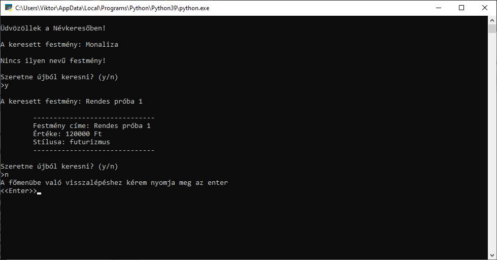
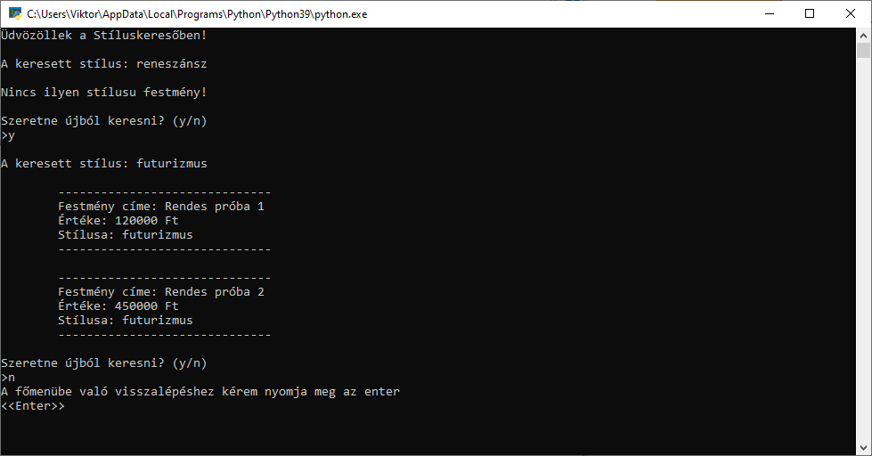

Név és stílus kereső
Ahogyan a cím is utal rá, név és stílus alapján lehet keresni a betöltött adatbázisban. Ez akkor fontos ha van egy adott festmény amit keresünk, de nem akarjuk egyessével végig nézni, hogy mi található egy-egy adatbázisban.
Névkereső:
Bekéri egy festény nevét a felhasználótól, majd átfésülve az aktuális adatbázis ki írja az összes információt róla. Esetleg ha nem található olyan nevű festmény amit a felhasználó keres arra is figyelmeztet. Továbbá megkérdezi minden keresés végén, hogy szeretne-e újabb keresés avagy sem. 
Stíluskereső:
Bekéri egy festény sítulsát a felhasználótól, majd átfésülve az aktuális adatbázis ki írja az összes információt róluk. Annyiban különbözik szerkezetileg a névkeresőtől, hogy itt minden keresett stílusú festményt kilistáz. Esetleg ha nem található olyan stÍlusú festmény amit a felhasználó keres arra is figyelmeztet. Továbbá megkérdezi minden keresés végén, hogy szeretne-e újabb keresés avagy sem. 